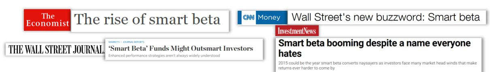
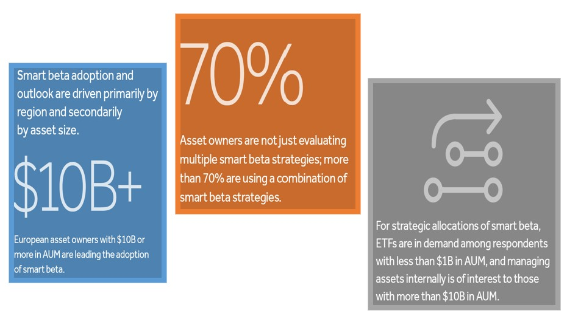
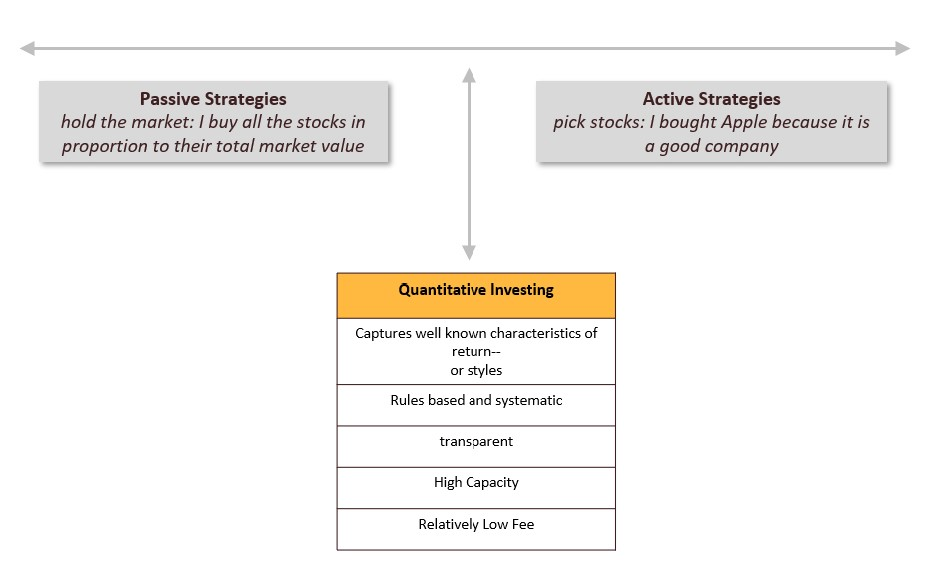

What is Quantitative Investing?
1. What is Quantitative Investing?#
Quantitative investing is about using large and diverse data sets through exploration, prediction, and inference together with theory to reach better investment decisions. Exploration involves identifying patterns in asset prices.
This is a class about quantitative investing in practice.
We will learn how to use data to guide investment decisions
Focus on how to organize, analyze, and investigate financial data sets
We will learn the state of the art in quantitative investing, and learn how to evaluate new quantitative strategies
Develop tools and programing skills that can be applied widely: asset management, investment banking, corporate finance, strategy
What is quantitative investing?
Use of data (and theory) to systematically construct portfolios
Focus on the statistical properties of asset returns
Statistical moments: mean, standard deviation, covariance,….
Use of fundamental data in algorithmic fashion
Sometimes referred to as smart beta in the industry:

Does the media attention reflect investor appetite?
Yes, interest among Institutional and Advisory clients is growing

Quant investing is right in between strictly passive strategies that just hold the market and purely active strategies where managers pick stocks/assets based on their judgment.

Quantitative investing requires data analysis and computing power
Find new patterns in asset returns
Evaluate an investment strategy
Implement an investment strategy
What is distictive about quantitative investing in it’s best form?
Backtestsed using historical data
Alphas are not huge, but one can have many strategied achieving diversification
Model driven
There are different types of “quants”:
High frequency traders (Citadel, Virtu, Susquehanna, Wolverine )
They trade in and out within minutes, hours. Their edge comes mostly from information technology and being able to process information extremely quickly.
Statistical arbitrage (ADR arbitrage, ETF arbitrage, twin stocks, index arbitrage, Merger arbitrage, event arbitrage)
Trading horizon is days to weeks. Edge comes of having reliable statistical models of these relationships and understanding when past relationships might breakdown.
Fundamental quant (Blackrock, DFA, Bridgewater, AQR,Vanguard)
Trading horizon is months/year. Combines use of statistics with economic analysis. Use information similar to that used by long/short equity managers (balance-sheet data, stock-return data, stock relevant events), but systematize it in a way that the computer can replixated what a good equity analysts does. Scale methodology across thousands of stocks around the world to reap benefits of diversification.
Jack Bogle, founder of Vanguard
In some ways the father of quantitative investing is Jack Bogle who operationalized the index fund in a way that is cheap and acessible. This essentially build the conditions for showing that active managers were mostly big losers realtive to easy/cheap index fund, and induce the quant investing revolution that moved from a personality centric culture to a data centric culture.
In lots of ways Eugene Fama and Kenneth French (UofR Simon grad!) are the academic founders that in lots of ways were way ahead of what was beign done in the industry at the time. They developed or perfected most of the techiques used to construct and evalaute quant strategies and were instrumental in building clean and organized data repositories for financial data.
Gene Fama and Ken French
Lots of recent attention to the quantitative investing community.
Some books:
Asset Management: is a great book by an Academic that now is the head of research at Blackrock. I highly recommend it.
Trillions: written by a pretty smart Financial Times journalist. I haven’t read it yet, but should be good.
Here some recent newspapers articles on Quantitative Investing: